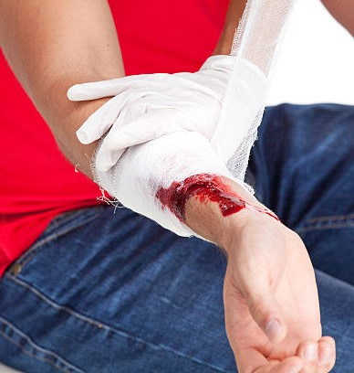

일사병시 응급 처치 요령

일사병 환자 발생시
환자를 직사광선이 없는 그늘진 장소로 옮긴다.
입고있는 옷을 느슨하게 하고 물을 환자의 몸에 뿌리거나 젖은 수건으로 몸을 닦아준다.
얼음이나 물을 목,겨드랑이 등에 대어 체온을 빠르게 내릴 수 있게 한다.
환자의 의식이 돌아오면 차가운 물이나 이온 음료를 천천히 마시게 한다.
단, 구토를 하는 경우에 억지로 마시게 해서는 안된다.
환자가 의식을 잃거나 혼미하다면 119에 신고한다.